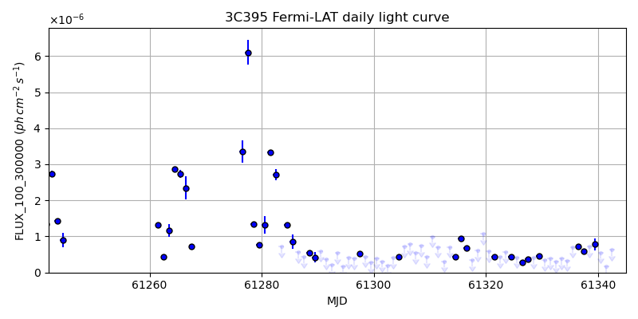
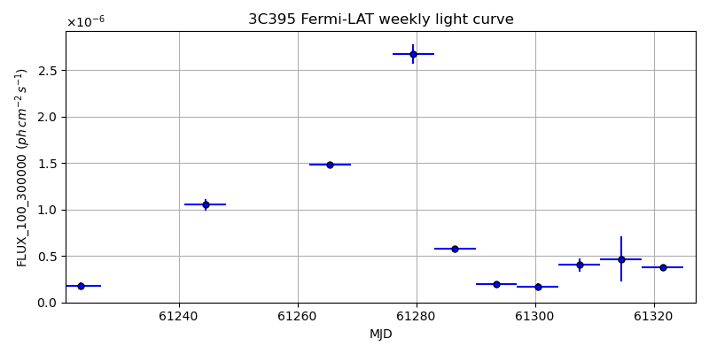
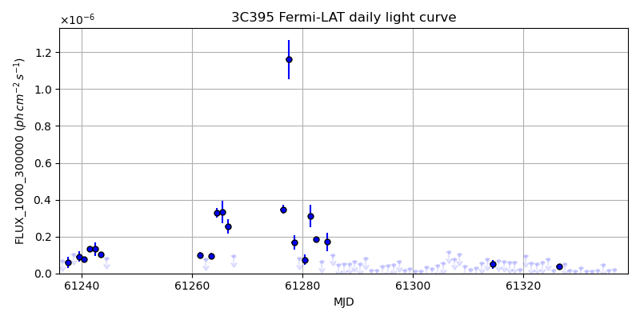
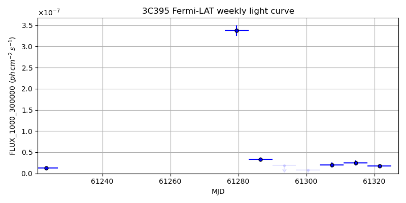

LAT Lightcurve site: https://fermi.gsfc.nasa.gov/ssc/data/access/lat/msl_lc/source/3C_395
NED: Query
Time of last update of this page: UT: 2026-10-24 15:25 (MJD: 61337.643)
| Property | Value |
|---|---|
| R.A. | 19:02:23.28 |
| Dec. | 32:00:00.0 |
| z | 0.635 |
| 3FGL SpectrumType | |
| 3FGL PL Index | -1.00 |
| 3FGL Flux_100_300000 | -1.00e+00 |
| 3FGL Flux_1000_300000 | -1.00e+00 |
| 3FGL Flux >200 GeV | -1.00e+00 |
| 3FGL Extrap. Crab >200 GeV | -1.00 |
| 3FGL Flux After EBL Absorption >200GeV | -1.00e+00 |
| 3FGL EBL Crab Fraction >200GeV | -1.00 |

| MJD | dMJD | Flux | dFlux | Frac3FGL | FracCrab>200GeV | EBLFracCrab>200GeV |
|---|---|---|---|---|---|---|
| 61332.50 | 0.50 | 2.98e-07 | 0.00e+00 | 0.00 | 0.00 | -0.00 |
| 61333.50 | 0.50 | 3.86e-07 | 0.00e+00 | 0.00 | 0.00 | -0.00 |
| 61334.50 | 0.50 | 3.34e-07 | 0.00e+00 | 0.00 | 0.00 | -0.00 |
| 61335.50 | 0.50 | 7.10e-07 | 0.00e+00 | 0.00 | 0.00 | -0.00 |
| 61336.50 | 0.50 | 7.31e-07 | 0.00e+00 | 0.00 | 0.00 | -0.00 |

| MJD | dMJD | Flux | dFlux | Frac3FGL | FracCrab>200GeV | EBLFracCrab>200GeV |
|---|---|---|---|---|---|---|
| 61300.50 | 3.50 | 1.68e-07 | 0.00e+00 | 0.00 | 0.00 | -0.00 |
| 61307.50 | 3.50 | 4.03e-07 | 0.00e+00 | 0.00 | 0.00 | -0.00 |
| 61314.50 | 3.50 | 4.66e-07 | 0.00e+00 | 0.00 | 0.00 | -0.00 |
| 61321.50 | 3.50 | 3.75e-07 | 0.00e+00 | 0.00 | 0.00 | -0.00 |
| 61328.50 | 3.50 | 2.84e-07 | 0.00e+00 | 0.00 | 0.00 | -0.00 |

| MJD | dMJD | Flux | dFlux | Frac3FGL | FracCrab>200GeV | EBLFracCrab>200GeV |
|---|---|---|---|---|---|---|
| 61332.50 | 0.50 | 1.11e-08 | 0.00e+00 | 0.00 | 0.00 | -0.00 |
| 61333.50 | 0.50 | 1.64e-08 | 0.00e+00 | 0.00 | 0.00 | -0.00 |
| 61334.50 | 0.50 | 4.55e-08 | 0.00e+00 | 0.00 | 0.00 | -0.00 |
| 61335.50 | 0.50 | 1.66e-08 | 0.00e+00 | 0.00 | 0.00 | -0.00 |
| 61336.50 | 0.50 | 2.09e-08 | 0.00e+00 | 0.00 | 0.00 | -0.00 |

| MJD | dMJD | Flux | dFlux | Frac3FGL | FracCrab>200GeV | EBLFracCrab>200GeV |
|---|---|---|---|---|---|---|
| 61300.50 | 3.50 | 7.97e-09 | 0.00e+00 | 0.00 | 0.00 | -0.00 |
| 61307.50 | 3.50 | 1.95e-08 | 0.00e+00 | 0.00 | 0.00 | -0.00 |
| 61314.50 | 3.50 | 2.51e-08 | 0.00e+00 | 0.00 | 0.00 | -0.00 |
| 61321.50 | 3.50 | 1.77e-08 | 0.00e+00 | 0.00 | 0.00 | -0.00 |
| 61328.50 | 3.50 | 9.57e-09 | 0.00e+00 | 0.00 | 0.00 | -0.00 |
--------------------------------------------------------- Using user-supplied coords: 19:02:23.28 32:00:00.0 2000 --------------------------------------------------------- FLWO UT night of: 2026-10-25 Local Sid. @ Midnight: 01:50 Sunset (-15.0) (local, UT): 18:49 01:49 Sunrise (-15.0) (local, UT): 05:27 12:27 Moonrise (local, UT): Moonset (local, UT): Moon phase: 0.99 --------------------------------------------------------- AzTime LSID UT Obj_el Obj_az Mn_el Mn_az Sep. --------------------------------------------------------- 18:49 20:39 01:49 69.7 277.4 26.2 94.5 84.2 19:19 21:09 02:19 63.3 279.2 32.4 98.6 84.3 19:49 21:39 02:49 57.1 281.2 38.6 103.2 84.4 20:19 22:09 03:19 50.8 283.3 44.7 108.4 84.5 20:49 22:39 03:49 44.6 285.5 50.6 114.6 84.5 21:19 23:09 04:19 38.5 287.8 56.2 122.3 84.6 21:49 23:39 04:49 32.4 290.3 61.2 132.2 84.7 22:19 00:09 05:19 26.5 292.9 65.5 145.3 84.7 22:49 00:39 05:49 20.7 295.7 68.4 162.2 84.8 23:19 01:10 06:19 15.0 298.7 69.4 182.2 84.9 23:49 01:40 06:49 9.5 302.0 68.2 202.0 84.9 00:19 02:10 07:19 4.3 305.5 65.1 218.6 85.0 00:49 02:40 07:49 -0.4 309.4 60.8 231.3 85.1 01:19 03:10 08:19 -5.6 313.6 55.7 240.9 85.2 01:49 03:40 08:49 -10.3 318.2 50.1 248.5 85.3 02:19 04:10 09:19 -14.3 323.2 44.3 254.6 85.4 02:49 04:40 09:49 -17.9 328.7 38.2 259.8 85.5 03:19 05:10 10:19 -20.9 334.6 32.1 264.4 85.6 03:49 05:40 10:49 -23.4 341.0 26.0 268.5 85.7 04:19 06:10 11:19 -25.1 347.7 19.9 272.4 85.9 04:49 06:40 11:49 -26.1 354.7 13.8 276.2 86.0 05:19 07:11 12:19 -26.3 1.8 7.8 279.9 86.2 05:27 07:18 12:27 -26.2 3.6 6.2 280.9 86.2 --------------------------------------------------------- Moon up all night, no dark time. Dark hours >55 deg.: 0.00